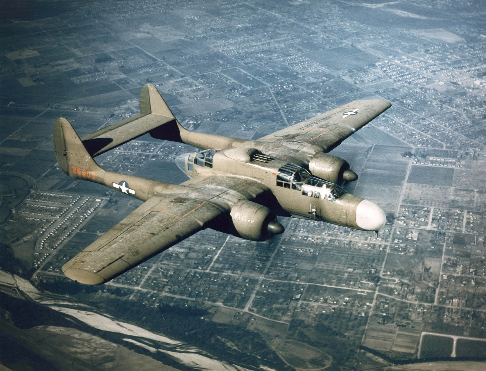

computer science | arch linux | linguistics | conlangs | military aviation | physics | biology
justanotherinternetguy's corner of the www
best viewed on firefox 1920x1080
contact me!


countdown timers
Time until first day of school:
some fun facts about me...
justanotherinternetguy's plane of the week
Northrop P-61 Black Widow

The Northrop P-61 Black Widow was the US Army Air Force's first
night fighter. At the time, combat avionics such as radar
were large and bulky, forcing aircraft designers to create a
different class of aircraft to house the avionics. In contrast,
day fighters were designed to be nimble and light, while
night fighters were much larger and had complex avionics.
The rather long nose of the P-61 housed the SCR-720 radar.
Generally, P-61s would be vectored into a general combat area by
ground control. Once at the scene of the combat, the P-61 could
use its own radar to search for enemy aircraft. The P-61 was a
generally capable aircraft, being able to stand ground against
most German bombers and any Japanese aircraft at the time. Nearing
the end of WW2, the P-61 began to be outclassed by new German
fighters. After the end of WW2, the P-61 saw some sporadic use
until the US could develop a jet interceptor.
Overall, the P-61 spearheaded the implementation and usage of
complex avionics in aerial combat. While it didn't live up to the
same fame as other fighters of its time, it still contributed
meaningfully to the war effort.
Previous planes of the week: Boeing Skyfox, P-75, F-107, XA2J